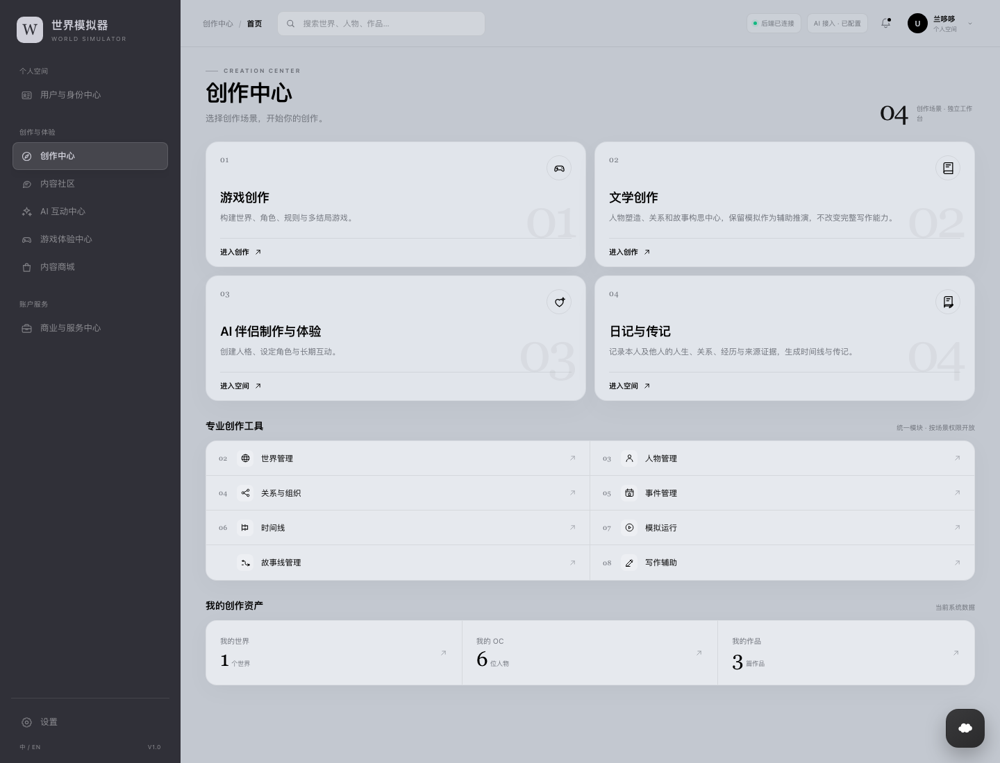
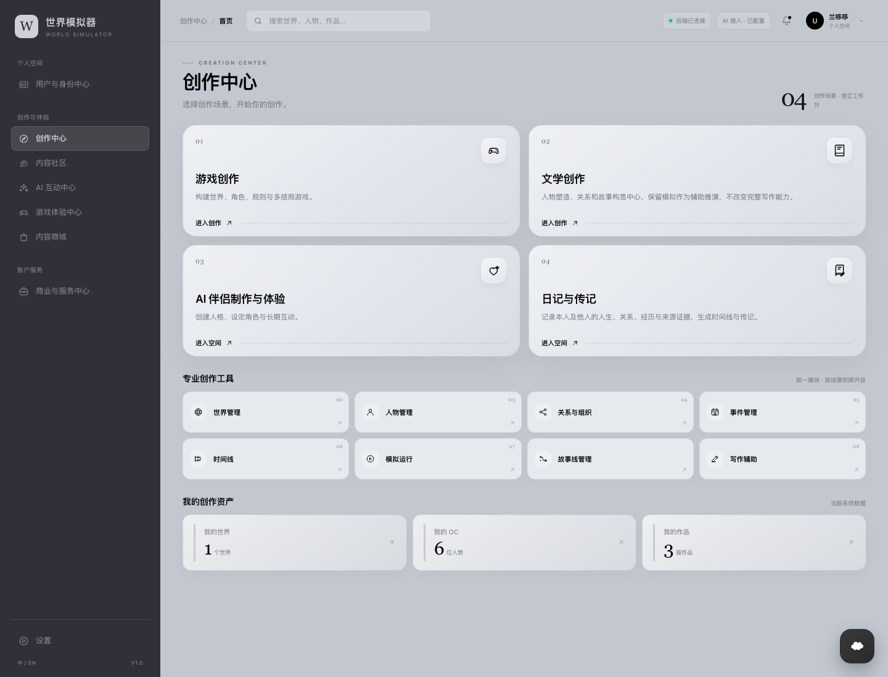
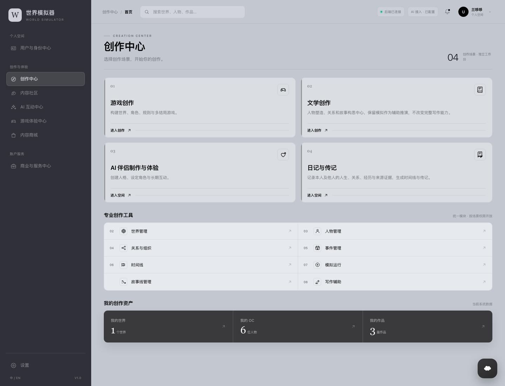

A EDITORIAL CALM
编辑纸感
留白最多，细线与大号衬线数字承担节奏；专业工具合并成一张目录式面板，资产是一条连续的信息带。安静、偏作品集气质。
B 方案已落回 React 生产首页。查看实际页面截图 →
三套原型保留同一套信息架构、现有配色与字体，只改变主内容的视觉组织。

留白最多，细线与大号衬线数字承担节奏；专业工具合并成一张目录式面板，资产是一条连续的信息带。安静、偏作品集气质。

最接近现有毛玻璃体系；四张场景卡有明确图标底座和层次，八个工具拆成四列小卡，资产用三张独立卡片呈现。信息最易扫读。

更克制、更结构化：卡片去阴影、左侧细强调线，工具采用两列表格，资产是一条深色数据带。偏专业工作台，密度最高。